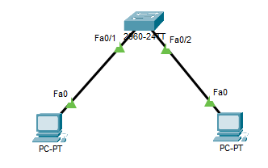

In deze oefening werk je met het commandovenster (de CLI) van de Cisco 2960-switch, een switch die je in een bedrijfsomgeving tegenkomt. Je zet hem terug op zijn standaardinstellingen.
Download het startbestand en open het in Cisco Packet Tracer.

Op het eerste gezicht ziet alles er goed uit, maar de twee computers kunnen elkaar niet pingen. Er staat nog een configuratie op de switch die in de weg zit. Je zet hem terug op fabrieksinstellingen met deze commando's:
erase startup config
delete flash:vlan.dat
delete flash:config.text
reload
write memory
Na deze commando's start de switch opnieuw op met de fabrieksinstellingen. Alles wat erop geconfigureerd stond is verdwenen.